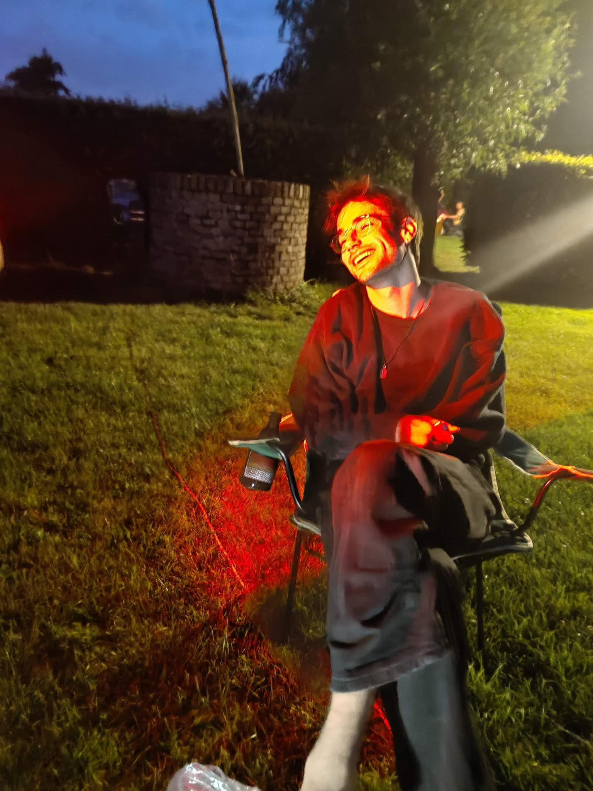

Allow me to introduce myself: Jolan Roosens
Welcome to my website! This site started as my final assignment for the Content Management Systems course, originally built from scratch using Craft CMS. To ensure a permanent and fast online presence, I have converted the project into a static website. This means you are currently viewing a high-performance version that no longer requires a database, while still showcasing the design and structure I developed. Feel free to explore my projects and the skills I have acquired!

Skills
Here I will list the most important skills I have developed over the last few months!
-
HTML/CSS/JS
-
React/Typescript
-
Craft CMS
-
Word/Excel/Powerpoint